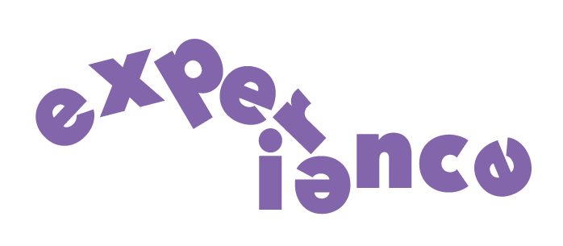

Job Experience
Stone Harbor LLC - Working Student
October 2019 - July 2022
-
Fed and exercised horses weekly for clients.
-
Developed scheduling and quick adaptive skills while focusing on the well-being of the animals and
advocating for their needs.
-
Developed the ability to work independently and as part of a team.
-
Built trusted professional relationships with teachers using strong listening and engagement skills.
Ristorante Rocca - Hostess
June 2021 - August 2022
-
Learned critical skills in interacting with customers, adapting to their needs.
-
Developed organizational skills and strategies when placing customers at tables.
-
Monitored restaurant activity as feedback for future action.
-
Learned to be a part of a team and work with other employees at the restaurant.
-
Learned the inner workings of a small, family-owned business and how to figure out how to help in areas that needed work.
-
Developed adaptive skills in busy restaurant times in order to satisfy customers and keep the restaurant working as efficiently as possible.
NextAxiom Inc. - Software Engineering Intern
May 2023 - July 2023
-
Learned how to quickly acquire new skills in coding, product testing, and graphic design.
-
Made web icons and posters for the company using the Adobe Suite.
-
Learned how to navigate large amounts of company code and problem-solve.
-
Did quality assurance (QA) and discovered how to navigate with a team of professionals to divide and
conquer tasks.
-
Learned how to work with a head developer to navigate tasks.
-
Worked with QA team to make bug tickets and give detailed, adequate feedback on issues in the product.
Skills
-
Knowledgable of the Adobe Suite (Photoshop, Illustrator, InDesign, etc.)
-
Knowledgeable of programming languages: Python, JavaScript, CSS, HTML
-
Proficient in navigating large amounts of code
-
Able to work well in teams, large or small
-
Adaptable in high-pressure, dynamic environments
-
Able to communicate effectively and advocate for myself and others
Interests
-
Textile work - loom, hand-knitting, crochet
-
Graphic and Web Design
-
Visual arts - collaging, oil pastels, etc.